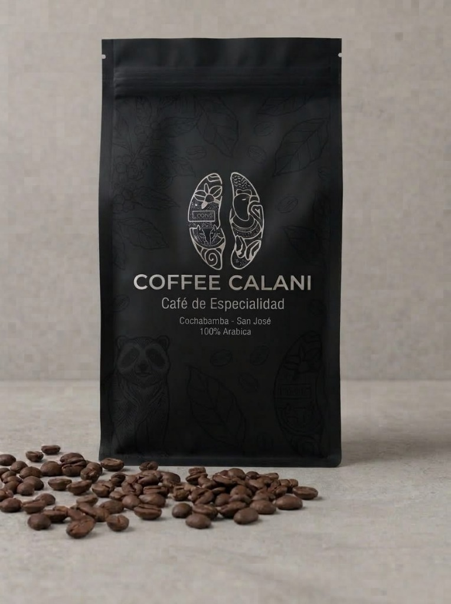
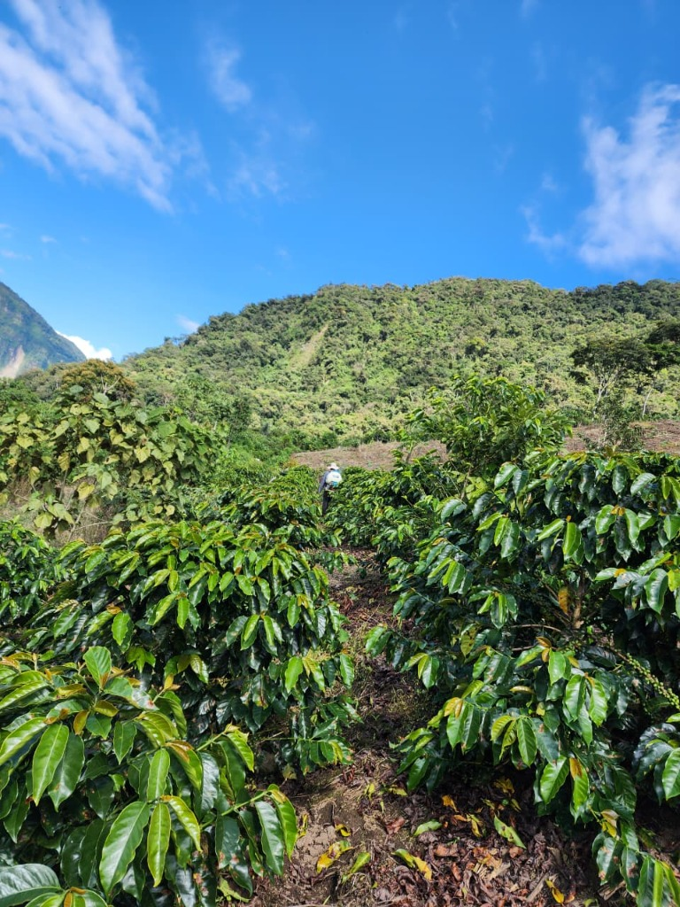
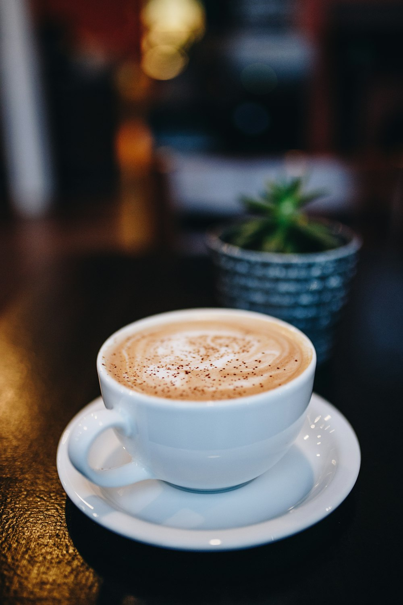

Café de Altura cultivado con alma en Bolivia.
Coffee Calani • Micro-lotes de Especialidad 100% Arábica
En las laderas tropicales de San José, Cochabamba, cultivamos y seleccionamos granos de estricta altura bajo la sombra del bosque nativo. Como productores y exportadores bolivianos, llevamos la pureza de nuestros micro-lotes tanto al mercado nacional (La Paz, Santa Cruz, Sucre y todo el país) como a tostadurías internacionales de Europa, Norteamérica y Asia, garantizando comercio directo, trazabilidad impecable y una experiencia en taza con puntajes superiores a 86–89 puntos SCA.

Empaque Válvula BilaminadoEdición Oficial • San José, Cochabamba • Tueste de Especialidad


El silencio de la montaña, la nobleza del café.
Nuestra labor en San José comienza antes del amanecer. Respetamos los tiempos de la naturaleza: cosecha manual de cerezas en su maduración perfecta, fermentaciones controladas en tanques herméticos y secado lento en camas elevadas bajo el sol andino-amazónico. Cada lote lleva la impronta de un ecosistema vivo.
Eventos, Concursos y Distinciones
Los escenarios donde el productor de Coffee Calani ha competido y las próximas ferias internacionales donde llevaremos el café boliviano.
Nuestros 5 Cafés de Especialidad
Cinco perfiles sensoriales de estricta altura. Selecciona la presentación y la molienda ideal para tu método.
Exportamos Café Boliviano en Todo el País y al Exterior
Atendemos de manera personalizada a cafeterías de especialidad, tostadurías artesanales, distribuidores e importadores internacionales. Ofrecemos disponibilidad tanto en café verde en sacos GrainPro como en café tostado en empaques valvulados bilaminados de alta barrera con ficha técnica certificada.
Cobertura Bolivia
Despachos diarios a La Paz, Santa Cruz, Sucre, Tarija, Oruro, Potosí, Beni y Pando.
Exportación Global
Envíos aéreos y marítimos con certificaciones fitosanitarias y documentación aduanera.
Precios Mayoristas
Escalas competitivas por volumen directo del productor sin intermediarios.
Trazabilidad SCA
Curvas de tueste, protocolos de cata y humedad de lote auditados.
Herencia Andino-Amazónica
El jaguar de las selvas subtropicales y el cóndor de las altas cumbres custodian el origen de Coffee Calani en Cochabamba.